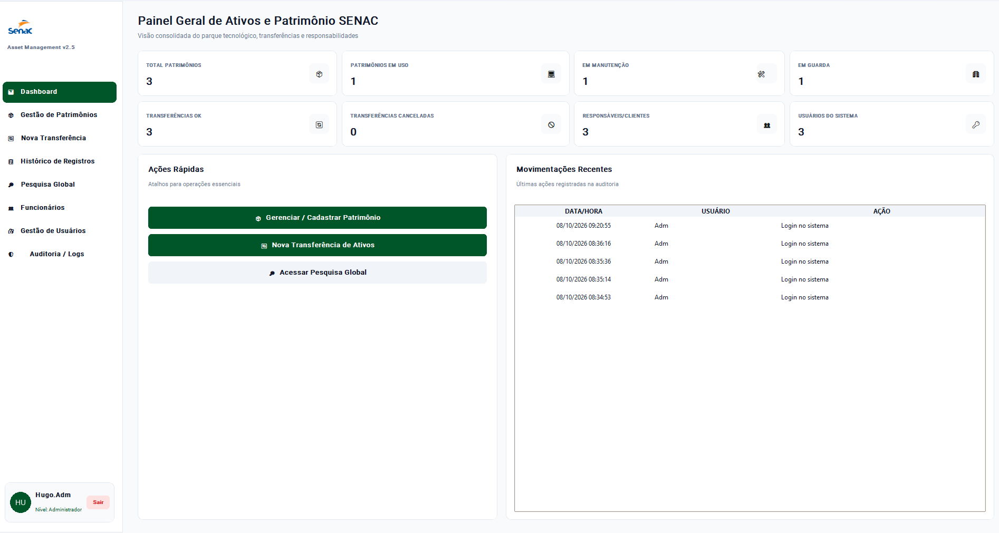
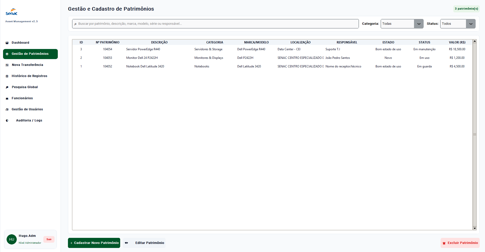
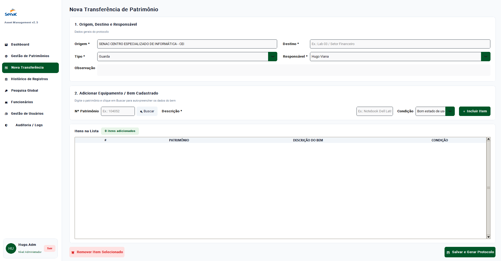
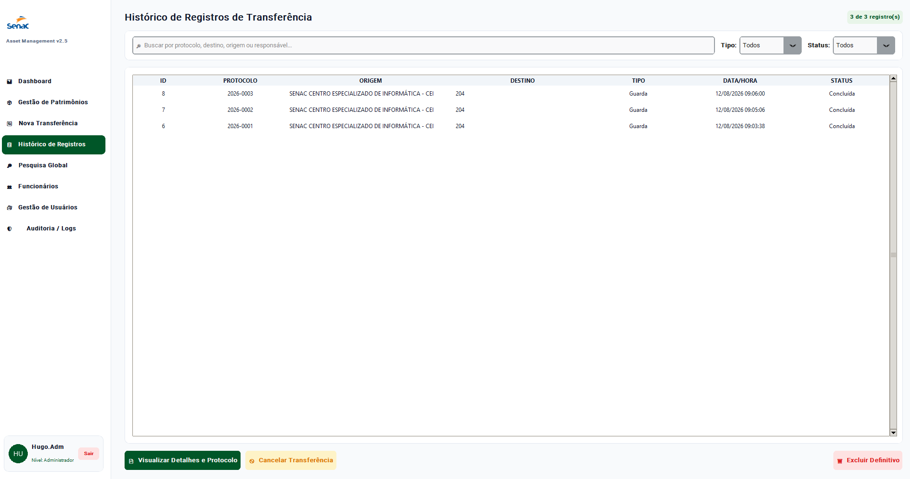
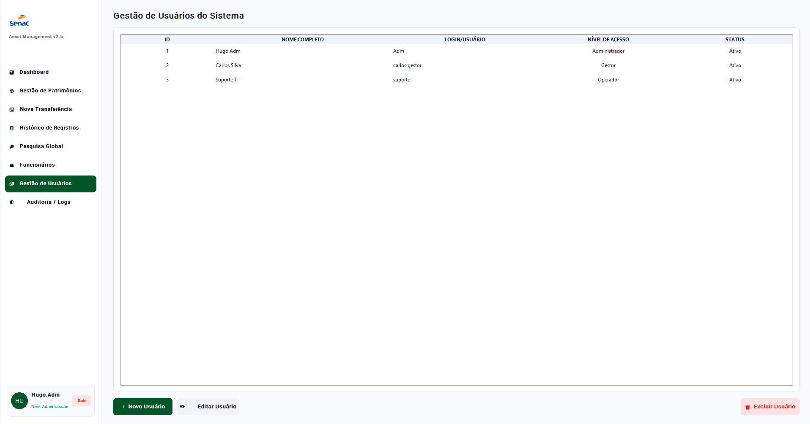
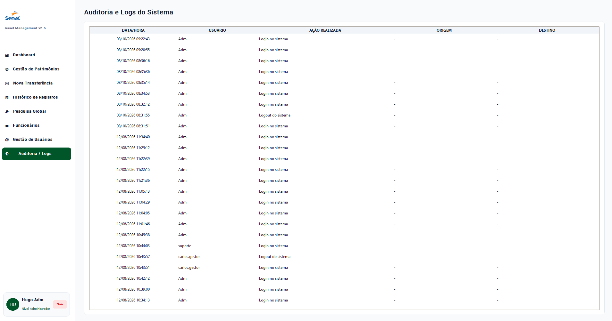

Python
Responsável por toda a lógica, regras de negócio e funcionamento da aplicação.
03 / PYTHON / ERP / DESKTOP
Sistema completo de gestão patrimonial e ativos de TI, desenvolvido para controlar patrimônios, transferências, responsáveis, usuários, protocolos e auditoria.
O SENAC ERP foi desenvolvido como um sistema de gestão patrimonial voltado ao controle completo de ativos e equipamentos de TI.
O sistema centraliza informações sobre patrimônios, usuários, funcionários, movimentações, transferências e histórico de operações.
Cada patrimônio pode possuir informações como número patrimonial, descrição, categoria, marca, modelo, número de série, valor, localização, responsável, estado e status.
Uma aplicação desktop criada para simular um sistema empresarial de controle patrimonial e ativos de TI.
Responsável por toda a lógica, regras de negócio e funcionamento da aplicação.
Utilizado para construir uma interface desktop moderna e organizada.
Armazena usuários, patrimônios, responsáveis, transferências e logs.
Responsável pela geração dos protocolos de transferência em PDF.
Antes de acessar o sistema, o usuário precisa realizar autenticação.
O nível de acesso determina quais áreas e funcionalidades ficam disponíveis.
Possui acesso completo ao sistema, incluindo usuários, auditoria e operações administrativas.
Pode gerenciar informações operacionais e funcionários.
Acesso focado nas operações principais de patrimônio e transferências.
O painel inicial apresenta uma visão resumida de tudo que está acontecendo no sistema.
Quantidade de ativos registrados.
Ativos atualmente utilizados.
Equipamentos que estão em manutenção.
Bens disponíveis ou armazenados.
Exibe transferências concluídas e canceladas.
As últimas operações realizadas ficam visíveis no dashboard.
A área de Gestão de Patrimônios permite cadastrar, editar, pesquisar e excluir ativos registrados no sistema.
Identificação única do ativo.
Computadores, notebooks, servidores, redes, periféricos, impressoras, monitores e outros.
Marca, modelo, número de série, valor e data de aquisição.
Localização, responsável, estado físico e status.
Ativo atualmente utilizado.
Equipamento passando por reparo.
Patrimônio armazenado.
Equipamento temporariamente transferido.
Uma das partes principais do sistema é o módulo de transferência patrimonial.
O usuário informa origem, destino, tipo da movimentação, responsável e os equipamentos envolvidos.
Transferência para armazenamento.
O ativo passa automaticamente para o status de manutenção.
O patrimônio é marcado como emprestado.
Atualiza localização, responsável e situação do ativo.
Ao salvar uma transferência, o sistema gera automaticamente um número de protocolo.
O número é gerado automaticamente considerando o ano atual e a quantidade de transferências registradas.
Todas as transferências realizadas podem ser consultadas posteriormente.
Busca por protocolo, origem, destino ou responsável.
Guarda, manutenção, transferência ou empréstimo.
Uma transferência pode ser cancelada sem apagar o histórico.
Permite consultar todos os bens vinculados ao protocolo.
O projeto possui geração automática de comprovantes de transferência em PDF.
O documento reúne informações como protocolo, data, origem, destino, tipo, responsável, status e patrimônios envolvidos.
O usuário pode salvar o protocolo em PDF ou enviá-lo diretamente para impressão.
A pesquisa global permite localizar diferentes informações do sistema utilizando um único termo.
Busca por número, descrição ou responsável.
Pesquisa por nome, CPF ou setor.
Busca protocolos, origens, destinos e responsáveis.
O sistema possui cadastro próprio para funcionários e responsáveis.
Identificação do responsável.
Informação de identificação.
Área onde o funcionário trabalha.
Função exercida pelo responsável.
Administradores possuem uma área específica para gerenciamento dos usuários do sistema.
Cadastro de novas contas.
Alteração de nome, login, senha e nível.
Contas podem ser bloqueadas sem serem apagadas.
Administrador, Gestor e Operador.
O sistema registra automaticamente diversas operações realizadas pelos usuários.
Os logs armazenam usuário, data e hora, ação realizada, origem e destino.
Entradas, saídas, cadastros, edições, exclusões, transferências e cancelamentos podem gerar registros no sistema.
O sistema utiliza SQLite para armazenar as informações de forma persistente.
Login, senha, nível e status.
Informações completas dos ativos.
Protocolos e movimentações.
Auditoria das ações realizadas.
Salve os screenshots usando os nomes indicados abaixo para que apareçam automaticamente.

Visão geral dos patrimônios e movimentações.

Cadastro, edição, busca e filtros.

Origem, destino, responsável e equipamentos.

Consulta das movimentações anteriores.

Usuários, níveis e permissões.

Registro das principais ações realizadas.
Organização de diferentes entidades e relacionamentos utilizando SQLite.
Separação entre modelos, repositório, interface e regras do sistema.
Desenvolvimento de funcionalidades semelhantes às encontradas em softwares empresariais.